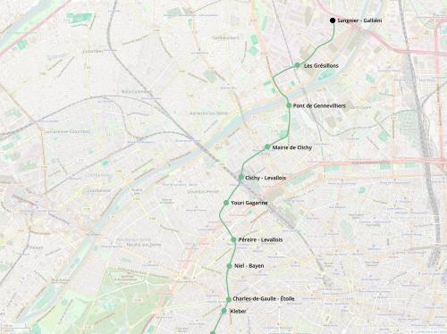

M6 Nord-Ouest - Villeneuve
M6 Nord-Ouest - Villeneuve
Étoile - Villeneuve-la-Garenne
Une extension de la ligne 6 du métro.
Le prolongement nord-ouest de la ligne 6 est un projet proposé par le Plan Ile-de-France. Il consisterait à prolonger la ligne 6 de la station Étoile jusqu'à Villeneuve-la-Garenne. Cette extension permettrait de mieux relier le 17e arrondissement de Paris au RER A à la gare d'Étoile ce qui soulagerait les lignes 2 et 3 du métro.
La liaison vers Mairie de Clichy contribuera à soulager la ligne 13 branche Asnières (qui devrait être intégrée au métro Nord).
Il y aurait une correspondance avec le métro 15 et le RER C aux Grésillons.
Enfin ce prolongement permettrait de doter la ligne 6 d'un vrai terminus, par opposition à une boucle comme c'est le cas actuellement à Étoile et d'ateliers d'entretien à Villeneuve-la-Garenne mutualisés avec la ligne 4 qui permettront d'améliorer la robustesse de l'exploitation et augmenter la fréquence des trains pour mieux absorber les pointes de trafic.
Voir les autres projets associés à cette ligne
Carte

Cliquer pour agrandir
Stations
Si ce projet vous intéresse n'hésitez pas à le (re-)partagez sur les réseaux sociaux ou par courriel ou à en parler autour de vous.
Si vous souhaitez travailler à la concrétisation de ce projet, passez à l'action et contactez nous.
Commenter